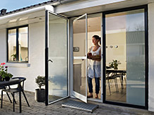
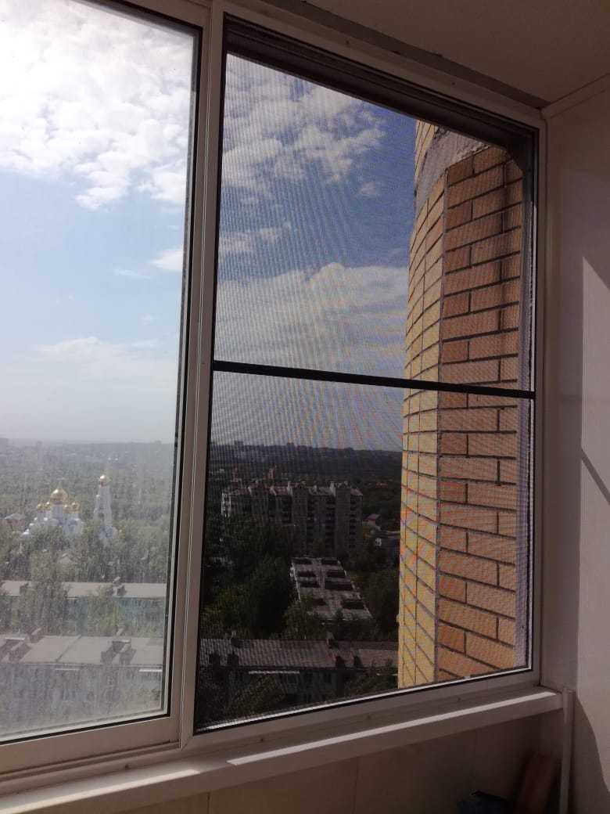
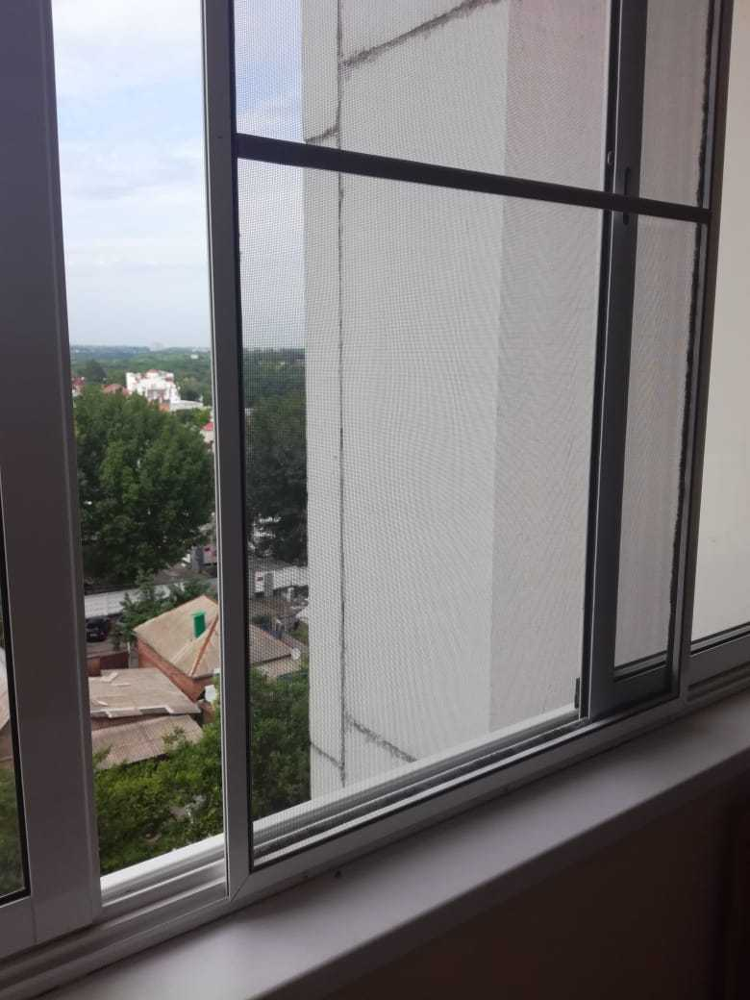

| О компании | Виды москитных сеток | Виды полотна | Замер и установка | Уход за сетками | Галерея | Контакты |
|---|

Компания «Краснодарский Мастер» уже более 5 лет оказывает услуги по установке москитных сеток - незаменимых аксессуаров в летний сезон, которые спасут вас и ваших домочадцев от насекомых.
Изготовление москтных дверей и сеток производиться в специально оборудованной машине прямо на месте. Вам не прийдется ждать мастера сначала на замер, а топом еще раз, чтобы осуществить установку готового изделия.
Мы производим сетки только из качественных материалов, приобретенных у проверенных поставщиков из России и Германии. Имеем в наличии разные цвета профиля и сетки.
|  | ||
| Рамочные | Раздвижные | Распашные |
|---|---|---|
| Рамная сетка защитит Вас от насекомых и пыли, установить такую стеку можно без затруднений в любой проем. | Раздвижные москитные сетки для лоджий и балконов. Могут монтироваться как внутри, так и снаружи помещения. | Распашные сетки монтируются на любые двери, выглядят современно и не портят вид и не ограничивают обзор. |
| Полотно "Стандартное" | Полотно "Антикошка" | Полотно "Антипыльца" |
|---|---|---|
| Служит защитой от попадания в помещение мусора , пуха и мелких частиц, которые могут вызывать аллергию. | Полотно москитной сетки «Антикошка» — обладает особой прочностью, и без труда выдержит вес кота | Благодаря более мелкому размеру ячеек эта сетка поможет не только уберечь вас от насекомых, но и от пыльцы растений. |
Изготавливаем москитные сетки под ключ от замера до установки прямо на месте в специально оборудованной машине. Но если вы желаете забрать уже
готовые изделия и самостоятельно их установить, то нужно воспользоваться специальной системой расчета размеров москитной сетки.Ключевым параметром при
замере москитной сетки является световой проём.
Система расчёта размеров москитных сеток непосредственно связана с типом креплений (для рамных систем).
По умолчанию наши москитные сетки подходят ко всем стандартным пластиковым оконным системам, монтаж которых выполнен без существенных
нарушений технологии. В случае установки москитных сеток на деревянные или алюминиевые рамы, может потребоваться демонтаж водоотбойника со створки окна.
Внешние факторы и любые погодные условия не смогут нанести вреда сетки, что достигается благодаря специальным полиэстеровым нитям, которые устойчивы к различным агрессивным факторам внешней среды. В связи с этим, не требуется дополнительный уход. По мере загрязнения москитная сетка антипыльца легко очищается при помощи обычного раствора мыла. Для достижения лучшего эффекта рекомендуется протирать сетку два раза в месяц, чтобы убирать пыльцу, осевшую на внешней стороне сетки.
|  |  |
Краснодар, Северная 763.
Позвоните или оставьте заявку, если вы не нашли
информацию
на сайте. Мы перезвоним в течении 5 минут и
ответим.
| Ваш телефон | |
|---|---|
| Ваш вопрос | |